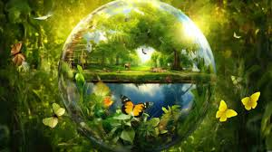

Medio Ambiente y La sustentabilidad

La noción del medio ambiente abarca un espectro vasto e interconectado de elementos físicos, biológicos y sociales que constituyen el entorno en el que interactúan y coexisten los organismos vivos. Desde la atmósfera que nos rodea hasta los profundos océanos, pasando por la complejidad de los ecosistemas terrestres y la diversidad de formas de vida que los habitan, el medio ambiente engloba todos los componentes naturales y construidos por el ser humano que influyen en la vida en la Tierra.
La sustentabilidad, por su parte, se erige como un paradigma fundamental para la gestión y preservación del medio ambiente y sus recursos, entendida como la capacidad de satisfacer las necesidades actuales sin comprometer la capacidad de las generaciones futuras para satisfacer sus propias demandas. Este concepto trasciende lo meramente ambiental, abrazando dimensiones económicas, sociales y culturales, pues implica la búsqueda de un equilibrio armonioso entre el bienestar humano, la protección del entorno natural y el progreso socioeconómico.
En el corazón de la sustentabilidad yace la comprensión de que los recursos naturales son finitos y que su explotación desmedida puede acarrear consecuencias catastróficas para el planeta y para las generaciones venideras. Así, la sustentabilidad promueve la adopción de prácticas y políticas que optimicen el uso de los recursos, minimicen el impacto ambiental y fomenten la equidad y la justicia social.
En resumen: